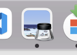

Вбудовані програми для роботи з фото на Mac
На Mac є дві вбудовані програми для роботи з фотографіями: "Фотографії" та "Оглядач".
- "Фотографії" - ця програма є ідеальним вибором для тих, хто шукає простий спосіб управління своєю фотобібліотекою та редагування фотографій. Фото автоматично імпортує фотографії з підключених пристроїв та вбудованої камери на Mac. Вона також може синхронізувати фотографії між різними пристроями, що працюють на одній і тій же iCloud-акаунті. За допомогою Фото можна редагувати фотографії, додавати ефекти, ретушувати, робити кроп та підбір кольору.
Іконка програми "Фотографії" -

- "Оглядач" - ця програма використовується для перегляду та редагування зображень. Всі фото відкриваються в за замовченням в оглядачі. "Оглядач" має більш широкий набір функцій порівняно з Фото, включаючи можливість обрізання, зміни розміру, зміни формату та інших. "Оглядач" також може працювати з PDF-файлами, що робить її ідеальним вибором для тих, хто шукає універсальний інструмент для роботи з зображеннями та PDF-файлами.
Іконка програми "Оглядач" - 
Типи файлів зображень, які підтримуються вбудованими програмами
В програмі Фото на Mac підтримуються наступні типи файлів:
- JPEG: це найбільш поширений формат зображень, який використовується для фотографій та інших зображень з багатою кольоровою палітрою.
- PNG: цей формат зображень має більшу якість, ніж JPEG, і він підтримує прозорість.
- TIFF: цей формат зображень зберігає велику кількість деталей та кольорів, тому він часто використовується для професійної фотографії та мистецтва.
- HEIF: цей формат зображень є стандартом для зображень на iOS та macOS. Він забезпечує високу якість зображення при малому розмірі файлу.
- Крім того, програма Фото також підтримує RAW-файли, які містять більше деталей та інформації про зображення. Однак, для редагування RAW-файлів вам може знадобитися додаткове програмне забезпечення.
Як відредагувати зображення на мак?
Редагування фотографій на Mac дуже просте та інтуїтивно зрозуміле. Щоб відкрити фотографію в програмі Фото, просто двічі клацніть на зображенні, або відкрийте програму Фото та натисніть на кнопку "Файл" в верхньому лівому куті екрану, а потім виберіть "Відкрити". Потім ви можете використовувати різні інструменти для редагування фото, такі як:
- Обрізка: цей інструмент дозволяє вам вирізати зображення до бажаного розміру або форми. Ви можете вибрати попередньо задані співвідношення сторін або встановити свої власні розміри.
- Ефекти: Фото містить велику кількість ефектів, які можна застосувати до зображення. Ви можете використовувати ефекти, щоб зробити зображення чорно-білим, висвітлити його, змінити колір та інше.
- Ретуш: цей інструмент дозволяє вам видалити дефекти на зображенні, такі як плями або зморшки. Це може бути особливо корисно для портретних фотографій.
- Кроп: ви можете вирізати частину зображення, щоб зосередитися на певному елементі.
- Підбір кольору: цей інструмент дозволяє вам вибрати певний колір на зображенні та змінити його на інши
- Експозиці: інструмент в програмі Фото який дозволяє змінити яскравість зображення.
- Регулювання кольору: цей інструмент дозволяє вам змінювати температуру та насиченість кольорів на зображенні.
- Редактор зображень: Фото містить вбудований редактор зображень, який дозволяє вам додавати текст, стрілки, рисунки та інші елементи до зображення.
- Панорама: програма Фото дозволяє вам створювати панорамні зображення з декількох окремих фотографій.
- Фільтри: програма Фото містить велику кількість фільтрів, які можна застосувати до зображення, щоб змінити його вигляд.
При редагуванні фото варто також звернути увагу на формат файлу під час збереження зображення. Використання програми Фото є простим та інтуїтивно зрозумілим, що дозволяє швидко навчитись редагуванню фотографій на мак.